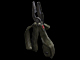
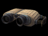

Engineer
Role
Completes Construction objectives and vehicle/deployable repair with Repair Tool, and deploys defense turrets and Landmines. Defuse enemy Plasma Charges to Defend Destruction Objectives.
Specialty
Construct and Defend
Objective
 Construct
Construct
Defuse enemy Plasma Charges
Weapons
Equipment
- Repair kit
- Deploy Tool
- Plant Mines
Deployables
 Artillery Interceptor Turret
Artillery Interceptor TurretInstructional info

Repair tool:
The Engineer can construct objectives by approaching the stack of building materials near the objective and hold the Use Key ("Default F") when the build icon appears. Your construction progress will be displayed on your crosshair. Some objectives will be constructed in stages, so you may have to fill the  progress bar multiple times to accomplish your objective.
progress bar multiple times to accomplish your objective.
To repair a vehicle or deployable, approach the damaged vehicle or deployable and hold the Use Key ("Default F") when the repair icon is visible. Continue to hold the Use Key ("Default F") until the target is fully repaired. Engineers gain XP for repairing damaged vehicles, even if it's unoccupied, as long as an enemy damaged it. If you come under attack while repairing it’s suggested to reequip your weapon and eliminate the threat before continuing to repair.
Disarming explosives and mines works the same way as repairing, approach the explosive you wish to disarm and equip the repair tool. Use the repair tool  on the explosive to disarm it. Note the Engineer can only disarm Trip mines, Proximity mines will blow you up if you approach them.
on the explosive to disarm it. Note the Engineer can only disarm Trip mines, Proximity mines will blow you up if you approach them.

Turret Deploy Tool:
To place a deployable select the Deploy Tool from the weapon menu and press the "Mouse 1" button to activate the Deploy Tool. The camera will now pull into third person view and a colored wireframe outline of a deployable will be visible. If the deployable grid is red or yellow it means the deployable cannot be placed in this location, move around the map and find a location where the placement grid is green. Once a green deploy location has been located press the Use Key ("Default F") to cycle through the available deployables and then press "Mouse 1" button again to place the deployable. Once placed you can now rotate the deployable by moving your mouse left or right to point in the desired direction (preferably towards the enemies territory) the arrow that points away from the deployable is the direction the deployable will face once deployed. Press the "Mouse 1" button again to deploy.
Remember: You can only deploy deployables in friendly territory.
 Mines:
Mines:
Engineers can only plant three mines at a time. Planting a new mine will remove the oldest mine. To place a mine select a mine from the weapon list and press left click to toss the mine in the desired location. Once the mine is placed it has to be armed with the repair tool. Arm the mine by approaching it until you see the arming icon and hold the Use Key ("Default F") or "Mouse 1" button until the mine is armed. Trip mines can be placed by using alt-fire however they can only be placed in certain locations like doorways and other small passageways.
Unique Engineer Ability:
GDF Engineers can construct MG Towers and MG Nests for their teammates.
Grenades:
- All grenades can be thrown slightly further by holding down the Fire key [Mouse1 Default].
- GDF Grenades can be lobbed a shorter distance by hitting Alt-Fire [Mouse2 Default].
- You can also use your grenades to harmlessly explode enemy mines.